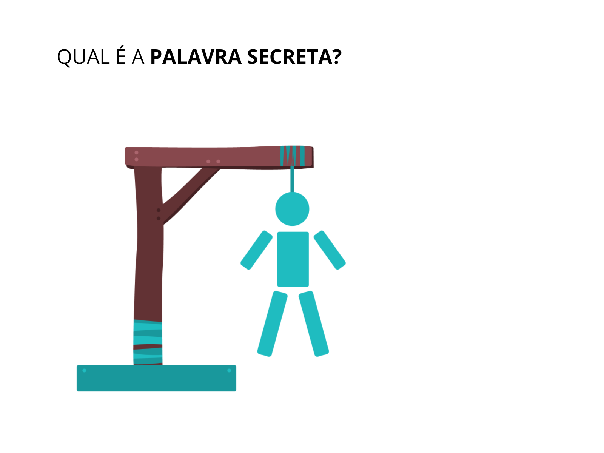
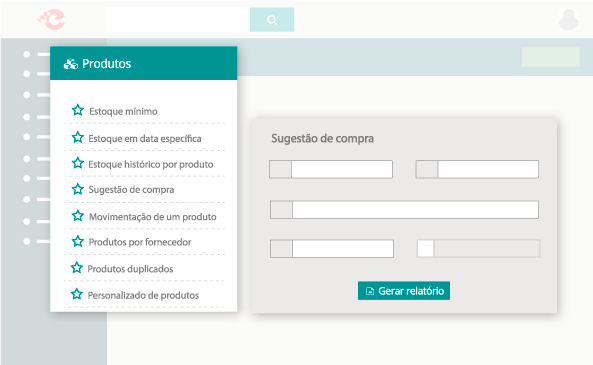
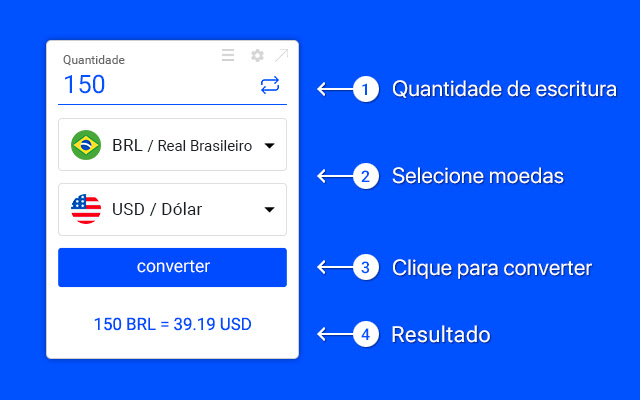

Atuação Profissional
Projeto 1 - Calculadora

Projeto acadêmico para criar uma calculadora. Um software de calculadora é um programa de computador que oferece funcionalidades semelhantes às de uma calculadora física. Ele permite realizar cálculos matemáticos em um ambiente digital, com uma interface gráfica intuitiva. Além das operações básicas, como adição e multiplicação, o software de calculadora também oferece recursos avançados, como trigonometria e cálculos estatísticos.
Linguagens utilizadas:
Projeto 2 - Jogo da Forca
Projeto acadêmico para criar um jogo da forca. O jogo da forca é um jogo popular onde os participantes tentam adivinhar uma palavra ou frase, ao tentar adivinhar letras individualmente. O jogo é jogado tradicionalmente com uma forca desenhada, onde cada letra incorreta adivinhada é representada por uma parte do corpo sendo desenhada, até que a forca esteja completa e o jogador perca o jogo. O objetivo dos participantes é adivinhar a palavra ou frase antes que a forca seja totalmente desenhada. É um jogo divertido e desafiador que pode ser jogado em grupo ou individualmente.
Linguagens utilizadas:
Projeto 3 - Controle de Estoque
Projeto acadêmico para criar um sistema de controle de estoque. uma solução que permite acompanhar e gerenciar os produtos em estoque de uma empresa. Ele registra as entradas e saídas de mercadorias, mantém atualizado o saldo de estoque e fornece informações valiosas para a gestão eficiente do inventário. O sistema emite alertas de reposição quando os níveis mínimos são atingidos e gera relatórios para análise e tomada de decisões.
Linguagens utilizadas:
Projeto 4 - Conversor de Moedas
Projeto acadêmico para criar um conversor de moedas. Um software de conversor de moedas é um programa ou aplicativo que permite converter o valor de uma moeda para outra com base nas taxas de câmbio atualizadas. Ele oferece uma maneira fácil e conveniente de realizar conversões monetárias, facilitando a compreensão dos valores em diferentes moedas. Esses softwares são amplamente utilizados em atividades financeiras, viagens internacionais e comércio eletrônico, proporcionando informações precisas e atualizadas sobre as taxas de câmbio.
Linguagens utilizadas:
Projeto 5 - CRM
Projeto acadêmico para criar um CRM de Vendas. Um CRM de vendas é um software que auxilia as equipes de vendas no gerenciamento e otimização de suas atividades. Ele registra e organiza informações de clientes, acompanha o progresso das vendas, automatiza tarefas repetitivas e fornece análises para melhorar o desempenho das vendas. O objetivo é aumentar a eficiência, produtividade e relacionamento com os clientes, tornando o processo de vendas mais eficaz e personalizado.
Linguagens utilizadas: